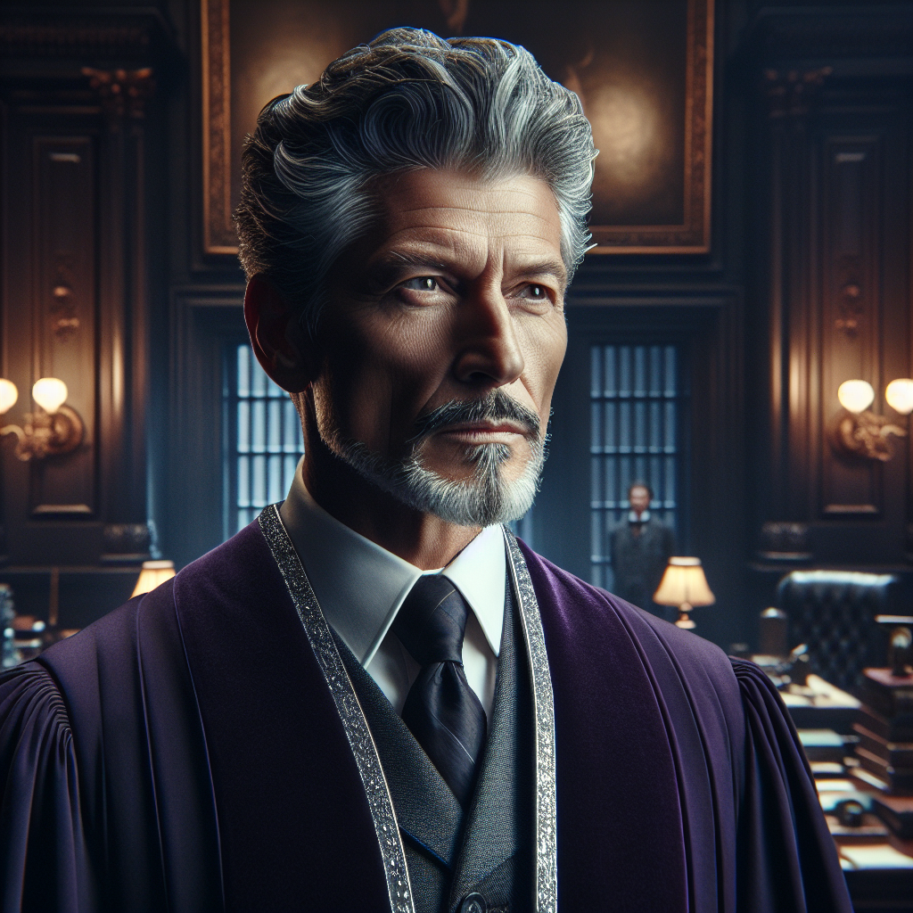
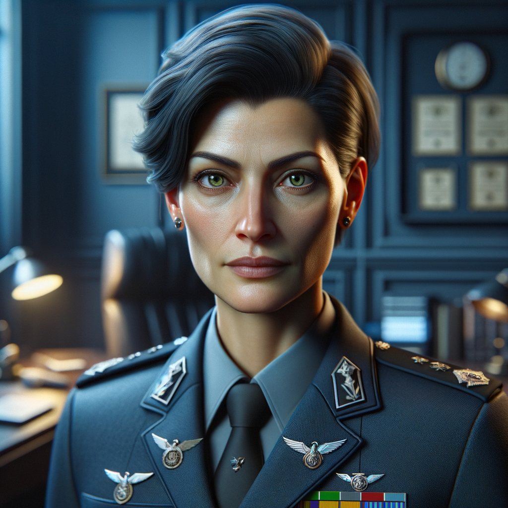
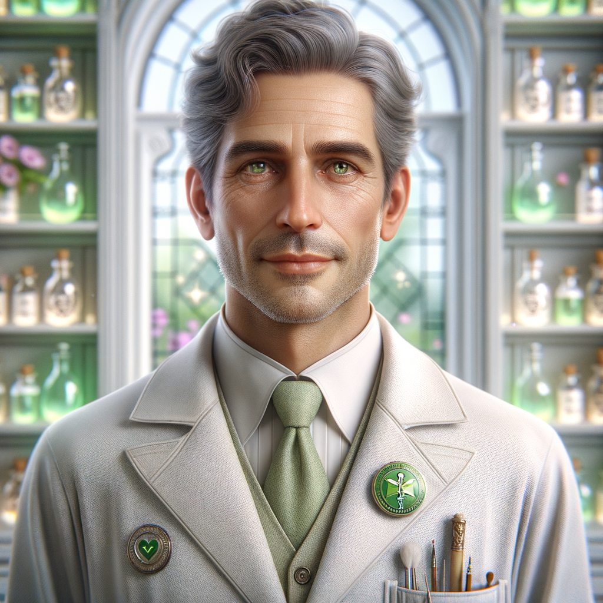
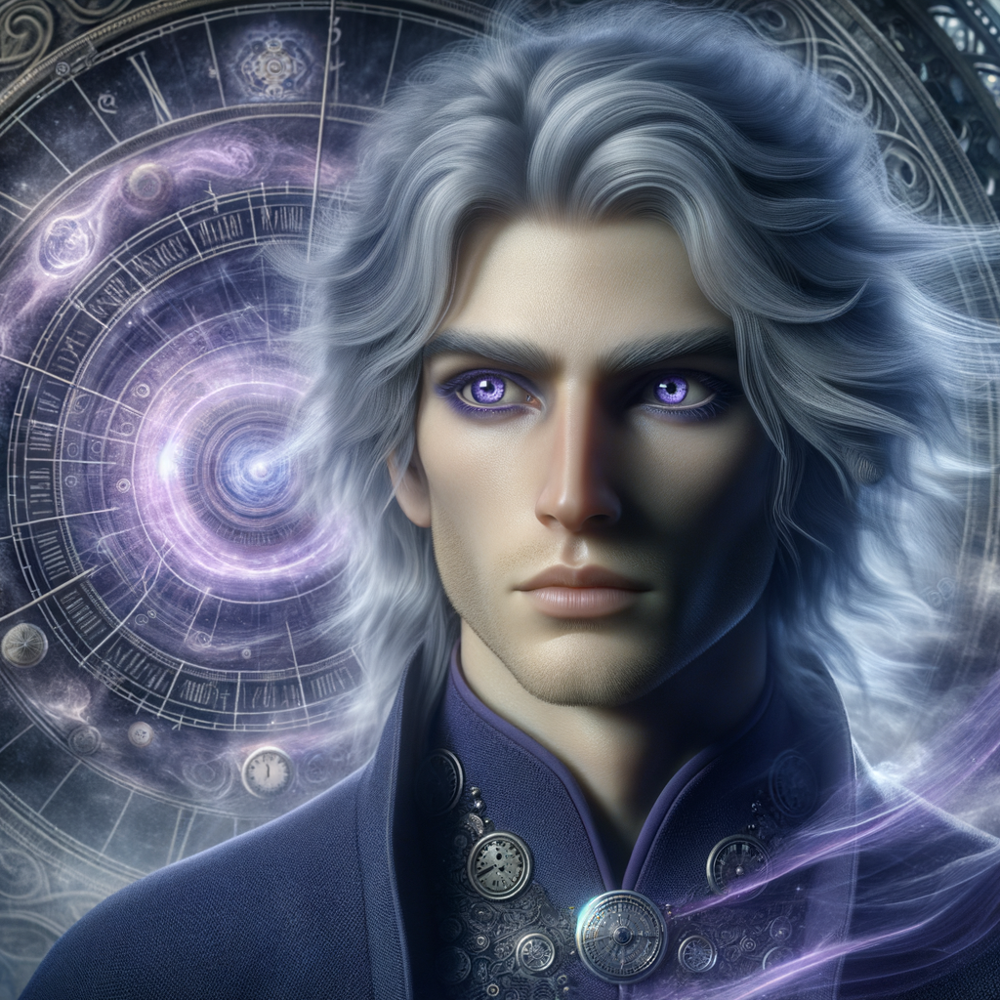
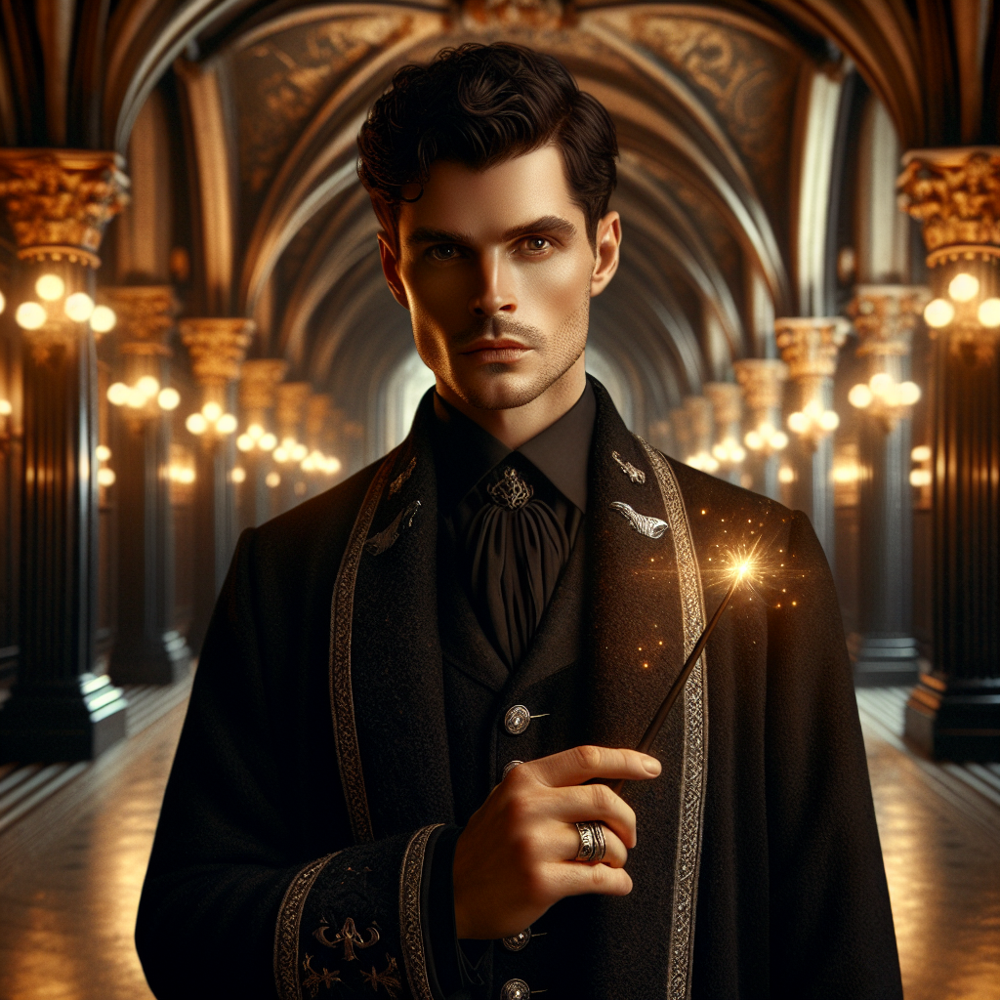

Minister Aldric Thorne
Acting Minister of Wonders
Department: Executive Leadership
Expertise: Policy, Reform, Administration
Access Level: Highest Ministry Clearance

Commander Brina Keats
Head of Magical Law Enforcement
Department: Auror Office
Expertise: Security, Investigation, Defense
Access Level: Security Protocols & Systems
Archivist Nella Vane
Keeper of Magical Records
Department: Archives & Records
Expertise: Historical Records, Memory, Documentation
Special Ability: Perfect Recall

Healer Corwin Dredge
Chief Medi-Wizard
Department: Medical Wing
Expertise: Magical Maladies, Potions, Forensics
Special Role: Examines the victim
Inquisitor Selwyn March
Internal Affairs Investigator
Department: Integrity Division
Expertise: Corruption Investigation, Interrogation
Reputation: Trusts no one
Magizoologist Elara Finn
Creature Behavior Specialist
Department: Creature Relations
Expertise: Magical Creatures, Rare Specimens
Access: Creature Containment Areas

Curator Theon Bales
Keeper of Magical Artifacts
Department: Hall of Magical Artifacts
Expertise: Ancient Artifacts, Magical Items
Notable: Mirror of Masks expert
Correspondent Lyra Quill
Prophet Investigative Journalist
Affiliation: The Daily Prophet
Expertise: Investigation, Interviews, Exposés
Motivation: The story of the century
Wandwright Cassian Thorn
Master Wand Craftsman
Department: Magical Equipment Division
Expertise: Wand Lore, Spell Traces, Wand Analysis
Special Skill: Can identify wand signatures

Unspeakable Dorian Mire
Department of Mysteries Researcher
Department: Hall of Time
Expertise: Temporal Magic, Classified Research
Note: Cannot discuss most work
Enchanter Vexa Rune
Spell Development Specialist
Department: Experimental Spellcraft
Expertise: Spell Creation, Magical Theory
Recent Work: Unmasking charms

Agent Soren Blackwood
Special Operations Liaison
Department: International Cooperation
Expertise: Covert Ops, Infiltration, Security
Background: Classified operations